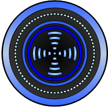
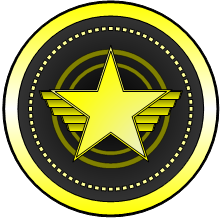
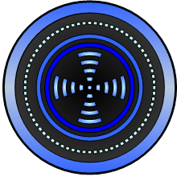
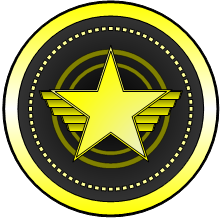

At first glance, the job of the captain seems odd
or unimportant. The captain doesn't have their own computer screen,
keyboard, or mouse. Any experienced Artemis player will tell you,
however, that the job of the captain is one of the most important and
critical components of the ship. Your ship is a complex entity, and each
interlocking role played by the other officers needs the guidance and
control of a single mind. The captain makes decisions and provides the
overall of vision of what the Artemis is doing, while relaying critical
information between each of the stations.
aaaaaaaaaaaaaaaaaaaaaaaaaa


  
 